Un llarg viatge per Glorantha
Van començar a jugar a RuneQuest abans de les onze del matí i van deixar de jugar (que no van acabar) passades les set i mitja de la vesprada.
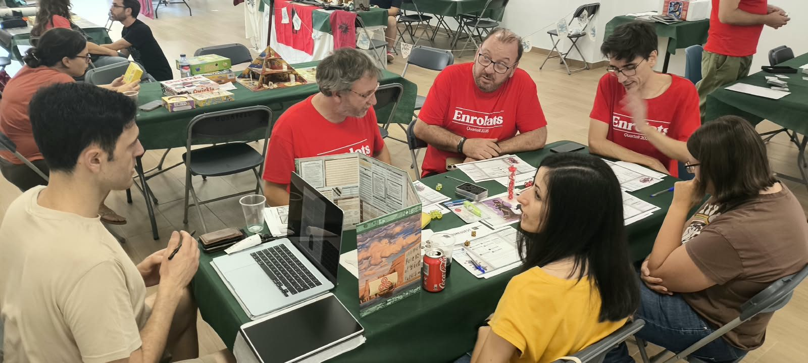
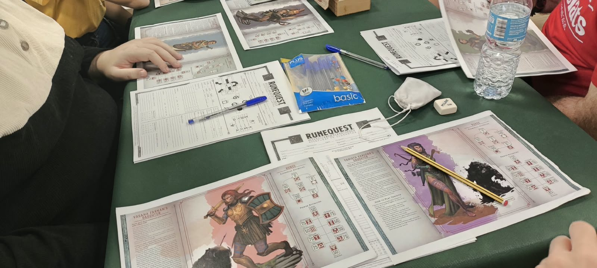
Els daus ja han parlat. Descobreix com va ser la jornada
Podria intentar fer una crònica cronològica del dia, però vos contaré el que jo vaig viure, a mode de titulars.
✍️ Per Alberto
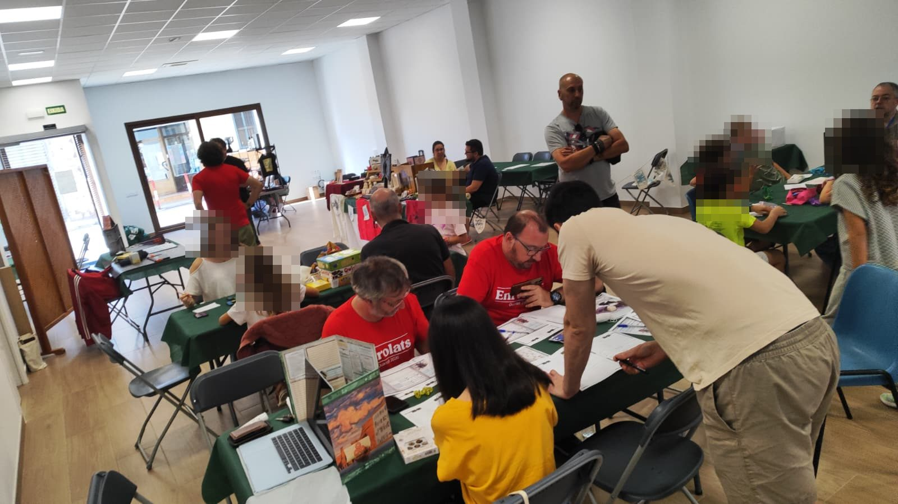
Van començar a jugar a RuneQuest abans de les onze del matí i van deixar de jugar (que no van acabar) passades les set i mitja de la vesprada.


Vam haver de posar una taula doble, perquè el nostre company Alberto va fer un desplegament de mapes tan increïble que no cabia en una sola taula. També va ser tot un èxit.
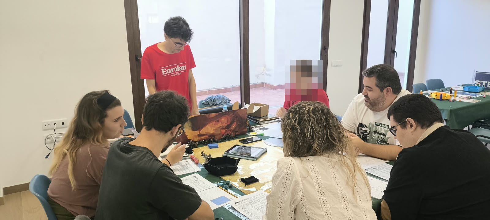
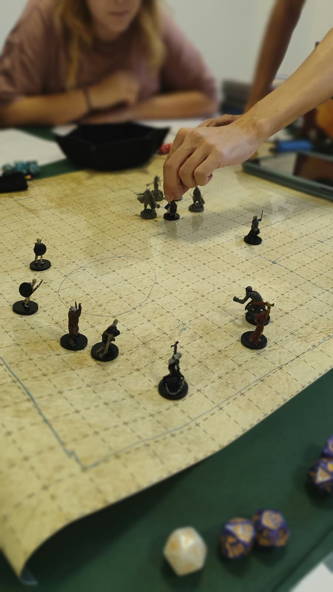
El nostre company David va ser el primer a reunir una taula infantil i, segons ens van contar, en van eixir encantats.
La nostra companya María va preparar una aventura molt xula de xicotets Jedis, però va coincidir en una franja horària amb poca afluència. Haurem de tornar-la a jugar. Per cert, María va regalar unes bossetes de daus xulíssimes, un gran gest per part seua.
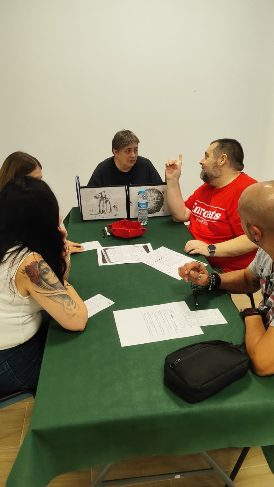
Per desgràcia, va ser una de les partides que es va quedar sense jugar. Com a bons cimmeris, haurem de fer alguna cosa al respecte prompte.
El nostre company Agus va preparar una aventura infantil amb un xicotet orc perdut que va agradar molt als més menuts. En canvi, la seua partida d'El Senyor dels Anells per a majors es va quedar sense jugar.
El nostre company Adolfo va fer un taller d'il·lustració per als menuts i, per la vesprada, ens va mostrar un prototip d'un joc de terror que té molt bona pinta.
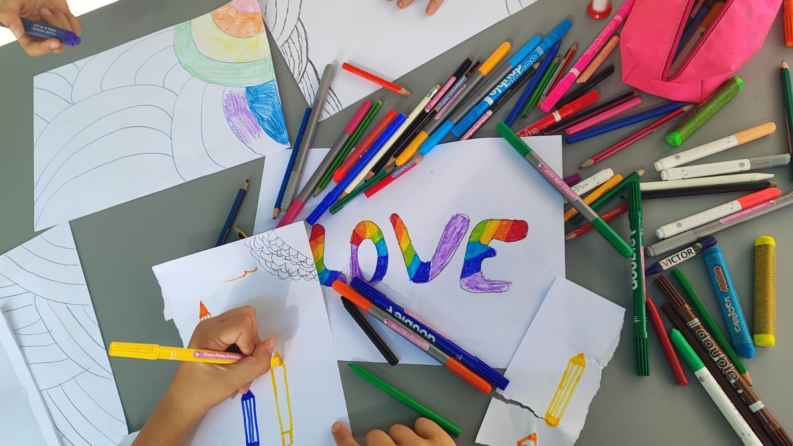
Al poc d'obrir les portes vam veure entrar un grup de set jovenets de 17 anys, casc de la moto en mà, que van entrar decidits fins al fons del local i es van asseure sense pensar-s'ho a la meua taula (preparada per a xiquets).
No sabien de què anava la jornada, mai havien sentit parlar del rol, però volien jugar. Així que res, vaig adaptar un poc l'aventura i vam començar a jugar. Vos assegure que va ser el començament de partida més difícil de la meua vida. Els vaig explicar què és el rol, les regles d'Ysystem i vam començar.
Un parell d'ells estaven més pendents d'unes xiques de la seua edat que estaven per allí, però tres d'ells es van ficar en la partida a l'instant. Al poc estaven llançant encanteris, destruint elementals de gel amb una espasa flamígera i baixant a les profunditats d'unes criptes.
Van celebrar diverses tirades de daus com si haguera sigut un gol de la selecció en la final i se'n van anar molt contents.
Durant el dia vaig tornar a jugar altres partides amb eixes fitxes diverses vegades, amb xiquets i pares. L'experiència va ser molt bona.
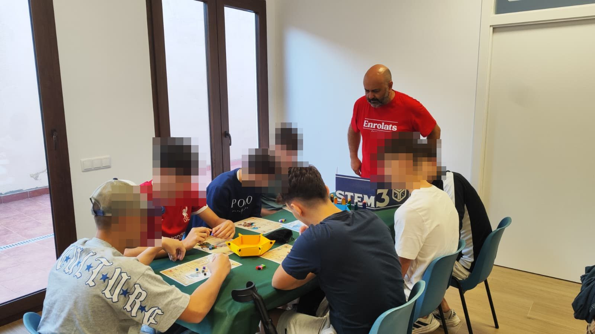
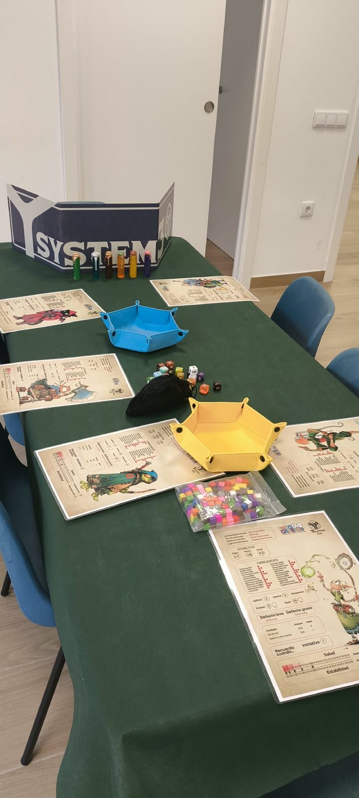
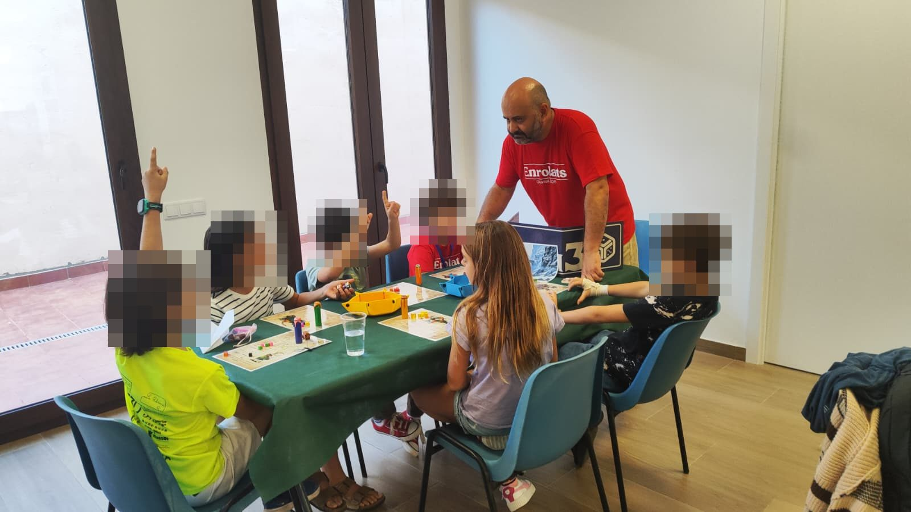
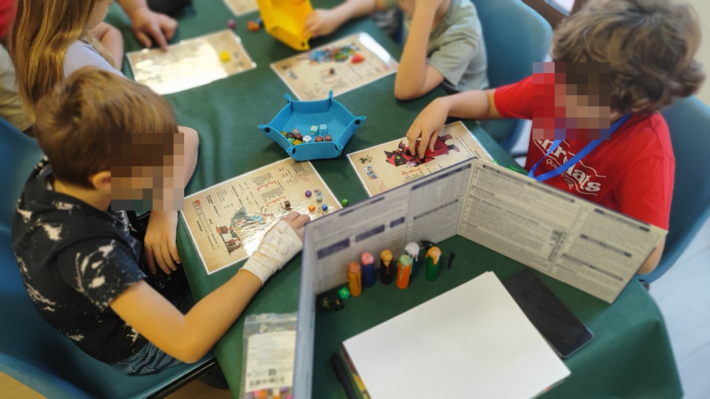
La gent que va acudir es va anar animant a poc a poc i, al final del dia, quan vam fer el sorteig, vam aconseguir uns 35 €, molt més del que jo esperava. A més, el sorteig el va guanyar el nostre company Josele, així que tot queda a casa.
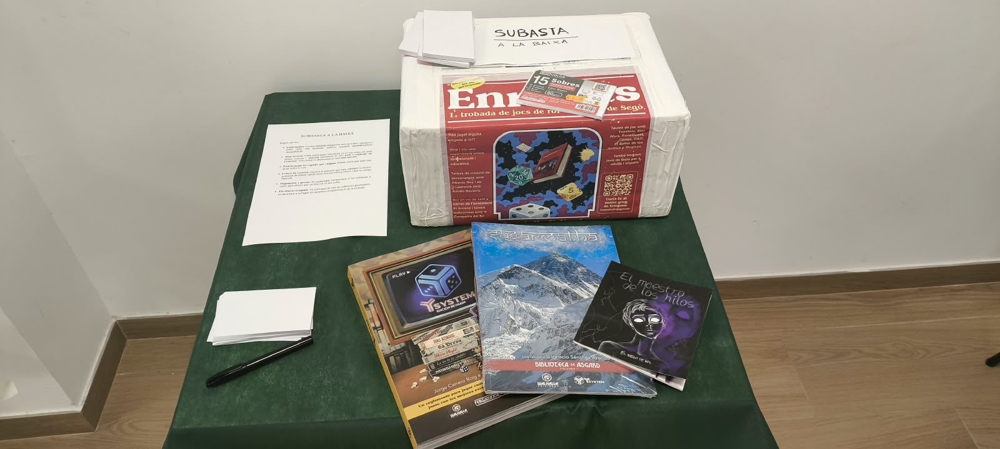
Estic molt content i agraït. Hem creat un grup molt xulo, ple d'entusiasme i d'il·lusió.
La gent del poble va respondre. És un poble xicotet i és difícil que un esdeveniment tan específic com este atraga públic. Potser la nostra experiència amb les edicions de l'Enjogassats, les nostres jornades de jocs de taula, ens precedia.
En resum, que m'enrotlle: estic molt content, agraït i il·lusionat pel que hem fet i, sobretot, pel que queda per fer.
Gràcies a tots pel vostre suport!
Editorials, botigues i associacions que van col·laborar amb la Jornada Enrolats
Assabenta't de les pròximes jornades a Instagram o fes-te simpatitzant de l'associació.